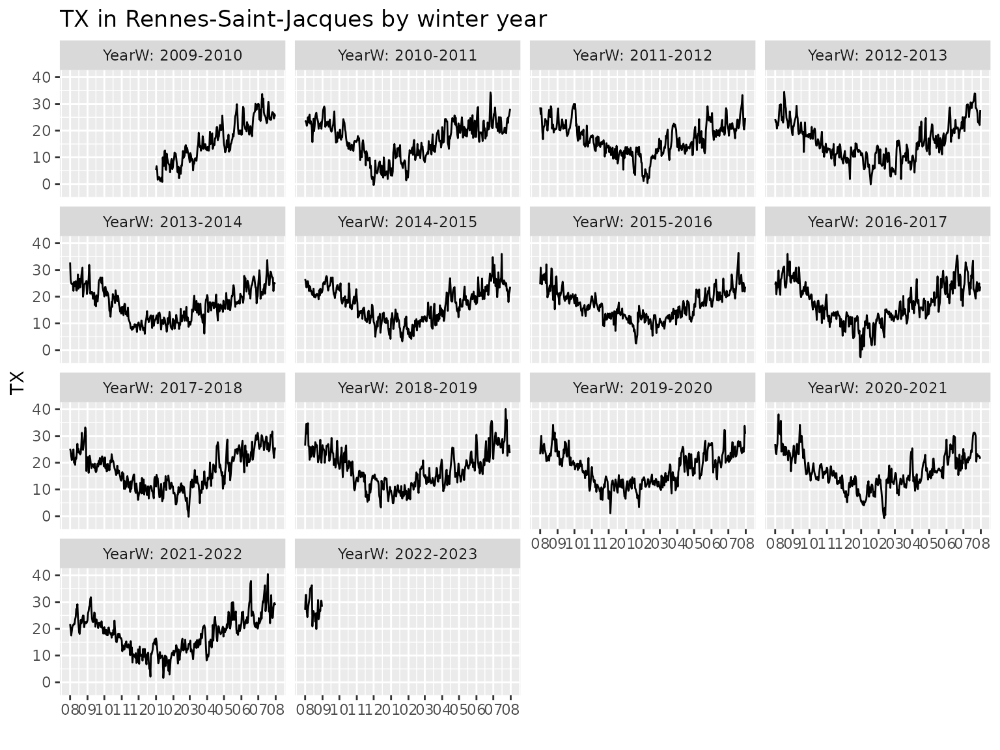

Goals
Use daily meteorological timeseries, mainly
TX.Provide bases of functions of the date: trigonometric, polynomial, …
Fit time-varying and non-stationary POT models with emphasis on the sensitivity to the threshold choice, thanks to dedicated classes of objects that we may call “TLists” for list by threshold.
Data classes and data manipulation functions
The "dailyMet" data class
As its name may suggest the "dailyMet" S3 class contains
objects describing meteorological timeseries sampled on a daily basis.
The package comes with the Rennes example.
## o Daily Meteorological Time Series
## o Station: "Rennes-Saint-Jacques"
## o Id: "07130"
## o Variable name: "TX"
## o Period length (yrs) 77.66
##
## o Non-missing periods
## Start End Duration
## 1 1945-01-02 2022-08-31 77.66
##
## o Summary for variable TX
## Min. 1st Qu. Median Mean 3rd Qu. Max.
## -7.50 11.30 15.90 16.18 21.10 40.50
##
## o Five smallest/largest obs
## min max
## [1,] -7.5 [1987-01-12] 40.5 [2022-07-18]
## [2,] -7.0 [1963-01-19] 40.1 [2019-07-23]
## [3,] -6.6 [1985-01-16] 39.5 [2003-08-05]
## [4,] -6.3 [1987-01-13] 38.8 [2003-08-09]
## [5,] -5.9 [1987-01-18] 38.4 [1949-07-12]The print method used for Rennes shows the
summary above which provides the essential information.
class(Rennes)## [1] "dailyMet" "data.frame"
methods(class = "dailyMet")## [1] autoplot head print subset summary tail
## see '?methods' for accessing help and source codeSo Rennes has class "dailyMet" which
inherits from the "data.frame"class. The print
method provides useful information. A method which is not implemented
for the class "dailyMet" will be inherited from the
"data.frame" class e.g., head,
tail, nrow …
autoplot(Rennes)Since the object embeds several variables related to the date, we can use these straightforwardly. Mind that the variable names are capitalised.
autoplot(Rennes, subset = Year >= 2010 & JJA, group = "year")
Splitting the timeseries in years is suitable when the interest is on
the summer season. It the interest is instead on winter, then using the
“winter year” YearW will be better since the whole winter
is included in a same “year”.
autoplot(Rennes, subset = Year >= 2010, group = "yearW")
Creating dailyMet objects from data files
Although no other data is shipped with the package,
dailymet has a sketch of file-based database, based on
the information provided in stationsMF
findStationMF("troy")## Desc Id Name Lat Lon Alt Dir
## 1 troyes-barberey 07168 TROYES-BARBEREY 48.32467 4.02 112 07168_troyes-barbereyThe idea is that the name or description can be quite loose. The
reliable identifier of a station is given in Code, which
corresponds to Météo-France données publiques
Météo-France
head(stationsMF)## Id Name Lat Lon Alt LongName ShortName
## 1 07005 ABBEVILLE 50.13600 1.834000 69 Abbeville Abbev
## 2 07015 LILLE-LESQUIN 50.57000 3.097500 47 Lille-Lesquin Lille
## 3 07020 PTE DE LA HAGUE 49.72517 -1.939833 6 Pointe de la Hague La-Hague
## 4 07027 CAEN-CARPIQUET 49.18000 -0.456167 67 Caen-Carpiquet Caen
## 5 07037 ROUEN-BOOS 49.38300 1.181667 151 Rouen-Boos Rouen
## 6 07072 REIMS-PRUNAY 49.20967 4.155333 95 Reims-Prunay Reims
## Zone Desc OldCode Resol40 Clim
## 1 Somme abbeville abbev 1 NW
## 2 Nord lille-lesquin 1 C
## 3 Manche cap-de-la-hague 1 NW
## 4 Calvados caen-carpiquet caen 1 NW
## 5 Seine-Maritime rouen-boos rouen 1 C
## 6 Marne reims-prunay reims 1 CWe will focus on the French metropolitan area.
See the help stationsMF for a leaflet
map of these. Note that the codes of the main MF stations for the
metropolitan area correspond roughly to an ordering from North to South
(decreasing latitude) and West to East (increasing longitude). This can
be of some help.
Provided that the data is available in .csv files
suitably named, we can read these into dailyMet objects.
The function readMet can be used for that aim. In order to
avoid a tedious construction of filenames an automated naming is used.
For instance the full information for MF station Troyes
(actually at the Troyes-Barberey airport) is found in the list
returned by findStationMF. This list can be passed as the
first argument of the readMet function, which will build
the filename from the values of the Id and
Name fields. The file is to be found in a directory with
its name stored in the environment variable metData.
## fails: several stations match
try(findStationMF("tro"))## Several matches found:
## 1 troyes-barberey 07168
## 2 serge-frolow-ile-tromelin 61976
## Error in findStationMF("tro") : several stations match. Hint. use 'id ='
myStation <- findStationMF("troyes")
try(readMet(myStation))## Error in readMet(myStation) :
## The `metData` environment variable is not set. Use `Sys.setenv(metData = x)` to set it.
Sys.setenv(metData = "~/Bureau/climatoData")
try(Troyes <- readMet(myStation))## Error in readMet(myStation) :
## The `metData` environment variable does not define an existing directory.Although the file is not found, we now see the name of the file that is sought for.
Functions and classes for analyses and models
Peaks Over Threshold (POT) models
The package focusses on so-called Poisson-GP POT models for random observations \(y(t)\) where \(t\) denotes a continuous time index. The model involves a time-varying threshold \(u(t)\) and a time-varying Generalized Pareto distribution for the excess \(y(t) - u(t)\) as recorded at an exceedance time \(y(t) > u(t)\). The exceedance times are assumed to occur according to a Non-Homogeneous Poisson Process (NHPPP) with rate \(\lambda(t)\). The excesses \(y(t) - u(t)\) at the exceedances are asumed to follow the two-parameter Generalised Pareto (GP) distribution with scale \(\sigma(t)>0\) and shape \(\xi(t)\). This distribution has support \((0, \,\infty)\) and the value of the survival function is given for \(x >0\) by \[ S_{\texttt{GP2}}(x;\,\sigma,\,\xi) = \begin{cases} \left[1 + \xi \, x/\sigma \right]_+^{-1/\xi} & \xi \neq 0\\ \exp\{- x/ \sigma \} & \xi = 0 \end{cases} \] where \(z_+:= \max\{z,\, 0\}\) denotes the positive part or a real number \(z\).
In practice, we will consider daily discrete-time timeseries \(y_t\) where \(t\) denotes the day i.e., the date. Similarly, the threshold \(u_t\), the rate \(\lambda_t\) and the GP parameters \(\sigma_t\) and \(\xi_t\) will be daily non random) timeseries. Provided that the exceedance rate is small enough, a discrete-time framework can be deduced from the continuous-time one. This model can also be related as well to the Binomial-GP model where the daily exceedance probabillity is small enough.
Using TLists
What are TLists?
A T-list or is a list of objects sharing the same definition except
for their threshold. The threshold is related to a probability
tau corresponding to the probability \(\tau\) as used in quantile regression.
A
rqTListobject is a list ofrqobjects differing only by their probabilitytau, hence related to the same data, same formula, …A
fevdTListobject is a list offevdobjects representing Poisson-GP POT models differing only by their threshold which is given by quantile regression and corresponds to different probabilitiestau. Again thefevdobjects are related to the same data, to the same formulas, …
Implicitly assumed, the vector tau should be in strictly
increasing order.
Another TList class is the "pgpTList" class
which corresponds to a list of fitted Poisson-GP models. Mind that
consistently with rq and fevd a lower case
acronym is used, followed by "TList“. However, for now, the
class "pgp" does not exist. We can fit a
pgpTList object with a vector tau of length
one, if needed. A pgpTList object is quite similar to a
fevdList object. The main difference concerns the
exceedances and their occurrence in time: Instead of an assuming
constant rate \(\lambda\), a purely
temporal non-homogeneous Poisson process is used. A rate depending on
the time \(\lambda(t)\) or on the time
and other covariates \(\lambda(\mathbf{x})\) can be specified by
using a devoted formula for \(\log
\lambda\).
Caution The development of pgpTList
class and of the relevant methods is far from being achieved. Some major
changes are likely to occur. For now the methods are as follows.
methods(class = "pgpTList")## [1] exceed logLik makeNewData modelMatrices parInfo
## [6] predict print quantile quantMax residuals
## [11] simulate summary
## see '?methods' for accessing help and source codeSome important remarks
A
rqobject does not encode a full distribution nor even a tail distribution. Therqobjects may fail to be consistent and the quantile may fail to increase with the probability \(\tau\). See (Northrop, Jonathan, and Randell 2016).Strictly speaking, the
fevdobjects in afevdTListobject are different Poisson-GP models, although they must have the same formulas. Indeed, the Poisson-GP parameterisation is not independent of the threshold: if the GPD scale depends linearly of a covariate \(x\) for a given threshold \(u\), then for a higher threshold \(u'>u\) the scale will generally depend on \(x\) in a nonlinear fashion. See the relation between the two POT parameterisation Poisson-GP and NHPP, only the later being independent of the threshold.
Quantile regression for seasonality
## tau=0.50 tau=0.70 tau=0.80 tau=0.90 tau=0.95 tau=0.97 tau=0.98 tau=0.99
## 0.50 0.70 0.80 0.90 0.95 0.97 0.98 0.99
formula(Rq)## TX ~ Cst + cosj1 + sinj1 + cosj2 + sinj2 + cosj3 + sinj3 - 1
## NULL
autoplot(Rq)By default the creator rqTList
Uses some defined probabilities \(\tau\) for the quantiles. These can be assessed by the
taumethod.Uses a
formulawhich defines a yearly seasonality for the quantiles. The default formula uses a basis of trigonometric functions with 3 harmonics, corresponding the the fundamental frequency \(1/365.25\:\text{day}^{-1}\) and its integer multiples \(2/365.25\), \(3/365.25\), …Considers a “design” function which creates the required variables
cosj1,sinj1,cosj2,sinj2, … where the integer after the prefixcosofsingives the frequency in increasing order, standing for the fundamental frequency corresponding to the one-year period.Build the required variables from the existing variables in the object specified by
dailyMet, mainly from theDatecolumn.Fits quantile regression
rqobjects from the quantreg package
More precisely the quantile \(q(\tau)\) of the meteorological variable is considered as a trigonometric polynomial function \(q_d(\tau)\) of the day in the year \(d\) (\(1 \leqslant d \leqslant 366\))
\[\begin{equation} \tag{1} q_d(\tau) \approx \alpha_0^{q}(\tau) + \sum_{k=1}^K \alpha_k^{q}(\tau) \cos\{2\pi k d/D\} + \beta_k^{q}(\tau) \sin\{2\pi k d/D\} \end{equation}\]
where \(D:=365.25\) is yearly period expressed in days. The pseudo-exponent \(q\) in the coefficients \(\alpha\) and \(\beta\) is used to recall that they describe a quantile. The default number of harmonics \(K\) is \(3\). The quantile regression provides the estimated coefficients \(\hat{\alpha}_k^{q}(\tau)\) and \(\hat{\beta}_k^{q}(\tau)\).
methods(class = "rqTList")## [1] autolayer autoplot coef coSd formula predict print
## [8] summary tau xi
## see '?methods' for accessing help and source code
coef(Rq)## Cst cosj1 sinj1 cosj2 sinj2 cosj3
## tau=0.50 16.06393 -6.799077 -2.591552 -0.25845982 0.8639527 -0.03092440
## tau=0.70 17.95239 -7.088085 -2.512324 -0.05437666 0.8490012 0.09359081
## tau=0.80 19.16725 -7.533421 -2.492802 -0.04192276 0.8351121 0.17707189
## tau=0.90 20.91793 -8.261868 -2.391511 -0.10477575 0.8021272 0.26742011
## tau=0.95 22.24216 -8.813697 -2.265968 -0.24878473 0.8232536 0.24753280
## tau=0.97 23.12972 -9.185094 -2.350450 -0.41137561 0.9621417 0.32897144
## tau=0.98 23.81042 -9.465539 -2.349878 -0.47458855 1.0689253 0.25157101
## tau=0.99 24.73573 -9.763231 -2.296899 -0.50022134 1.1528784 0.24505818
## sinj3
## tau=0.50 0.06418181
## tau=0.70 0.06247610
## tau=0.80 0.04022597
## tau=0.90 -0.05661638
## tau=0.95 -0.09498655
## tau=0.97 -0.17853494
## tau=0.98 -0.26641707
## tau=0.99 -0.27323854
coSd(Rq)## Cst cosj1 sinj1 cosj2
## tau=0.50 16.064 [0.027] -6.799 [0.042] -2.592 [0.034] -0.258 [0.037]
## tau=0.70 17.952 [0.029] -7.088 [0.042] -2.512 [0.040] -0.054 [0.041]
## tau=0.80 19.167 [0.035] -7.533 [0.052] -2.493 [0.047] -0.042 [0.049]
## tau=0.90 20.918 [0.039] -8.262 [0.053] -2.392 [0.056] -0.105 [0.054]
## tau=0.95 22.242 [0.048] -8.814 [0.066] -2.266 [0.069] -0.249 [0.067]
## tau=0.97 23.130 [0.061] -9.185 [0.084] -2.350 [0.088] -0.411 [0.086]
## tau=0.98 23.810 [0.065] -9.466 [0.086] -2.350 [0.098] -0.475 [0.090]
## tau=0.99 24.736 [0.081] -9.763 [0.120] -2.297 [0.110] -0.500 [0.115]
## sinj2 cosj3 sinj3
## tau=0.50 0.864 [0.037] -0.031 [0.037] 0.064 [0.037]
## tau=0.70 0.849 [0.041] 0.094 [0.040] 0.062 [0.040]
## tau=0.80 0.835 [0.049] 0.177 [0.046] 0.040 [0.046]
## tau=0.90 0.802 [0.054] 0.267 [0.051] -0.057 [0.051]
## tau=0.95 0.823 [0.067] 0.248 [0.063] -0.095 [0.063]
## tau=0.97 0.962 [0.085] 0.329 [0.080] -0.179 [0.080]
## tau=0.98 1.069 [0.089] 0.252 [0.085] -0.266 [0.084]
## tau=0.99 1.153 [0.115] 0.245 [0.108] -0.273 [0.108]The coSd method (for “coef” and “Standard error” or
“Standard deviation”) gives the coefficients and their standard error.
We see that some estimated coefficients are not significant, namely
those for the 3-rd harmonic for the “small” probabilities. However, when
\(\tau\) becomes larger, the estimated
coefficients for the \(3\)-rd harmonic
becomes significant, although their standard error increases because
they are based on a smaller number of observations. This suggests that
the \(3\)-rd harmonic plays a role in
the seasonality of the extremes, although it will be difficult to
assess.
As may be guessed from the plot of quantiles, the fitted phases corresponding to the different harmonics are quite similar across probabilities \(\tau < 0.95\). More precisely we may consider the following alternative parameterisation of the trigonometric polynomial
\[\begin{equation} \tag{2} q_d(\tau) \approx \gamma_0^{q}(\tau) + \sum_{k=1}^K \gamma_k^{q}(\tau) \sin\left\{2\pi k \left[d - \phi_k^{q}(\tau)\right]/D\right\} \end{equation}\]
where the parameter \(\gamma_k^{q}(\tau)\) and \(\phi_k^{q}(\tau)\) are called
amplitudes and phase shifts or simply phases.
The two formulations (1) and (2) are actually equivalent, as can be seen
from the trigonometric “angle subtraction formula” \(\sin(a -b) = \sin(a)\cos(b) - \cos(a)
\sin(b)\). We could think of using the second form in a
quanteg::rq fit, but this is not possible since the phase
\(\phi_k^q\) appears in a nonlinear
fashion. So we can fit the linear cos-sin form and then compute the
estimate for the amplitudes and phases by using some trigonometry.
## phi1 phi2 phi3 gamma1 gamma2 gamma3
## tau=0.50 112 8.45 8.7 7.28 0.902 0.0712
## tau=0.70 111 1.86 -19.0 7.52 0.851 0.1125
## tau=0.80 110 1.46 -26.1 7.94 0.836 0.1816
## tau=0.90 108 3.78 87.3 8.60 0.809 0.2733
## tau=0.95 106 8.53 84.2 9.10 0.860 0.2651
## tau=0.97 106 11.74 81.7 9.48 1.046 0.3743
## tau=0.98 105 12.14 75.5 9.75 1.170 0.3664
## tau=0.99 105 11.90 75.0 10.03 1.257 0.3670The table shows the \(K=3\) phases
\(\phi_k\) and amplitudes \(\gamma_k\). Note that the object returned
by phases has as special class "phasesMatrix".
The amplitudes are actually stored as an attribute of the numeric matrix
of phases, not as a matrix with \(2K\)
columns.
We see that for the different probabilities the phases of the \(1\)-st and \(2\)-nd harmonics are quite similar, while those of the \(3\)-rd harmonics are different, and seem to drift as the probability \(\tau\) increases.
The constant \(\gamma_0^{[\tau]}\) does not appear on the plot.. Note that the amplitudes \(\gamma_k^{[\tau]}\) rapidly decrease with the frequency, consistently with the fact that the quantiles are quite smooth functions of the day \(d\). The amplitude slightly increases with \(\tau\), especially for the fundamental frequency \(k=1\). In other words the seasonality becomes more pronounced when the probability \(\tau\) increases.
Seasonality in (time-varying) POT models
Why seasonality matters
Using a suitable description of the seasonality is a major concern in POT modelling (Coles and Tawn 2005), (Coles 2004), (Northrop, Jonathan, and Randell 2016). Concerning our meteorological variables, a natural idea is to use GP or GEV parameters depending on the date through the day in year \(d\) since it is clear that the marginal distribution heavily depends on \(d\).
There are also many reasons to use a seasonally time-varying threshold \(u(d)\) depending as well on \(d\). One motivation is the efficiency of the estimation: A constant threshold would be too low for a season and too high for another. Moreover, if a constant threshold is used, the results are likely to depend much on the threshold value because the distribution over a period of several months in the year is actually a weighted mixture of different distributions corresponding to the values of \(d\), and their weight will depend much on the constant threshold. For instance, if a constant threshold is used for all the JJA period, the weight of the early June and late August will be smaller when the threshold is increased.
Seasonal Poisson-GP models
In order to describe the yearly seasonality, a natural idea is to use a trigonometric polynomial as described above. For instance the GP scale parameter \(\sigma\) could depend on \(t\) though the day in year \(d\) as in
\[ \sigma_d = \alpha_0^{\sigma} + \sum_{k=1}^K \alpha_k^{\sigma} \cos\{2\pi k d/D\} + \beta_k^{\sigma} \sin\{2\pi k d/D\} \]
where the coefficients \(\alpha_k^{\sigma}\) and \(\beta_k^{\sigma}\) are to be estimated. However \(2 K +1\) parameters and for \(K=3\) or even for \(K=2\) the estimation can be difficult. To facilitate the estimation, one can use instead the amplitude-phase formulation
\[ \sigma_d = \gamma_0^{\sigma} + \sum_{k=1}^K \gamma_k^{\sigma} \sin\left\{2\pi k \left[d - \phi_k \right]/D\right\} \]
where the phases \(\phi_k\) are considered as fixed or known. In practice, we can use the phases \(\phi_k := {\hat{\phi}}^{q}_k(\tau_{\text{ref}})\) given by quantile regression for a fixed “reference” probability e.g., \(\tau_{\text{ref}} = 0.95\). So we have only \(K+1\) parameter to estimate. Since the phases are usually quite stable for the high quantiles, hopefully the same should be true also for the GP parameters.
The "fevdTlist" is a transitional class which requires
to “manually” create a list of fevd objects having the same
but different thresholds obtained by quantile regression. Once these
objects have been fitted and gathered in a list, the
as.fevdTList coercion method can be used. The
"pgpTList" class is easier to use.
Note that while using as above a large range of probability \(\tau\) is adequate to get insights on the variable, a narrower range of probability values seems more adequate for POT models. We can use \(\tau\) ranging, say, from \(0.90\) to \(0.98\).
To create a pgpTList object, the appropriate way is
first, fit a rqTList object with chosen
thresholds. This object will be passed to the thresholds
argument of the creator pgpTList. In order to compute the
sine wave basis functions with the prescribed phases corresponding to
the probability \(\tau_{\text{ref}}\),
the argument tauRef can be used.
Rq <- rqTList(dailyMet = Rennes, tau = c(0.94, 0.95, 0.96, 0.97, 0.98, 0.99))
Pgp1 <- pgpTList(dailyMet = Rennes, thresholds = Rq,
declust = TRUE, fitLambda = TRUE, logLambda.fun = ~ YearNum - 1)
pred <- predict(Pgp1, lastFullYear = TRUE)
autoplot(pred, facet = FALSE)The output of the code was not shown because the
NHPoisson::fitPP.fun function used to fit the time part of
the model is very verbose. The Figure above shows the 100-year return
level (RL), which depends on the date, for the last full year of the
fitting period. We see that rather realistic values are obtained and
moreover that the fitted RL depends little on the threshold choice,
which is a nice feature. The default formulas used in the creator for
the GP part (hence passed to fevd) are
scale.fun = ~Cst + sinjPhi1 + sinJPhi2 + sinjPhi3 - 1shape.fun = ~1
So no time-trend was specified in the GP part of the model. However a
time-trend was used for the exceedance rate, namely \[
\lambda(t) = \exp\{ \beta_0^\lambda + \beta_1^\lambda t \},
\] where the time \(t\) is given
by YearNum so the coefficient \(\beta^\lambda_1\) is in inverse years \(\text{yr}^{-1}\).
How pgpTList works
The value of tauRef is used to select the appropriate
line in the matrix phases(coef(thresholds)) which is used
internally. So tauRef must correspond to a probability used
to define the thresholds. The so-created vector of phases
phi is then used to create the basis functions with the
sinBasis function or equivalently of the
tsDesign function with type = "sinwave". The
sine wave basis functions are used to add new variables to the data
frame given in dailyMet. Then the “fitting functions”
extRemes::fevd and NHPoisson:fitPP.fun are
used to fit the “GP” part” and the (temporal) “Poisson part” for each of
the thresholds computed from the thresholds object. The
results for the “GP” part and the the time Poisson part are stored as
the two elements "GP" and "timePoisson" of the
returned list, the first having the class "fevdTList". We
hence can use the methods for the "fevdTList" class to get
insights on the "GP" part of our pgpTList
object.
Caution The log-likelihood of a Poisson-GP is the sum of two contributions corresponding to the GP and the time-Poisson parts, see Northrop et Al.
Investigating the distribution of the maximum
Goal
One often wants to investigate the distribution of the maximum \(M := \max_t y_t\) where the maximum is taken on a “new” period of interest, typically a period in the near future. By using a Poisson-GP POT model one can only investigate the tail-distribution of \(M\). More precisely the Poisson-GP model allows the computation of \(\text{Pr}\{M \leqslant m\}\) when \(m\) is larger than the maximum of the thresholds on the period of interest \(m> \max_t u(t)\). The reason is that when this condition holds the condition \(M > m\) is equivalent to \(M_{\texttt{peak}} > m\) where \(M_{\texttt{peak}}\) denotes the maximum of the peaks on the same period.
One can show that \[ \log \text{Pr}\{M \leqslant m \} = -\int \lambda_u(t) \, S_{\texttt{GP2}}\{m - u(t);\, \sigma_u(t), \, \xi(t)\}\, \text{d}t, \qquad \text{for } m \text{ large}, \] where the time integral is on the period of interest, and the discrete-time approximation is \[ \log \Pr\{ M \leqslant m \} \approx - \frac{1}{365.25} \, \sum_t \lambda_{u,t} \, S_{\texttt{GP2}}(m - u_t;\, \sigma_t,\, \xi_t), \qquad \text{for } m \text{ large}. \]
In both cases the condition \(m \text{ large}\) is more precisely \(m > \max_t u(t)\) or \(m> \max_t u_t\).
Note that \(M\) does not follow a Generalized Extreme Value (GEV) distribution, even in its tail, but has the same tail as a mixture of GEV distributions. In particular if the shape \(\xi_t\) is chosen to be time-varying then the largest values of \(\xi_t\) will have a disproportionate impact on the high quantiles.
Using the quantile method
The quantile method can be used to compute the tail
quantiles from a pgpTList object
Date <- seq(from = as.Date("2020-01-01"),
to = as.Date("2050-01-01"), by = "day")
qMax <- quantMax(Pgp1, newdata = Date)
autoplot(qMax)We can display the quantiles in a table
| tau | Prob | ProbExc | Quant | L | U | Level | |
|---|---|---|---|---|---|---|---|
| 93 | 0.96 | 0.950 | 0.050 | 41.32 | 40.08 | 42.57 | 0.95 |
| 97 | 0.96 | 0.980 | 0.020 | 41.76 | 40.39 | 43.14 | 0.95 |
| 99 | 0.96 | 0.990 | 0.010 | 42.04 | 40.57 | 43.50 | 0.95 |
| 102 | 0.96 | 0.995 | 0.005 | 42.27 | 40.72 | 43.82 | 0.95 |
| 103 | 0.96 | 0.995 | 0.005 | 42.27 | 40.72 | 43.82 | 0.95 |
| 106 | 0.96 | 0.998 | 0.002 | 42.53 | 40.87 | 44.18 | 0.95 |
| 107 | 0.96 | 0.999 | 0.001 | 42.67 | 40.95 | 44.40 | 0.95 |
Note that the class "pgpTList" has a format
method used here. This method rounds the quantiles and confidence limit
digits but it also selects “round” exceedance probabilities
such as 0.1, 0.01 as is often needed in
reports. To save space, only the quantiles corresponding to one value of
\(\tau\) are shown here.
Using the simulate method
As an alternative we can simulate the (declustered) exceedances on the period of interest. By default only the large exceedances will be simulated. More precisely, for each value of \(\tau\) a new threshold \(v := \max_{t} u(t)\) is defined and only the exceedances over \(v\) will be considered. These events occur in summer.
By default, only one simulation is done. But by using the formal
argument nsim with a large value (say
nsim = 1000 or more) we can compute estimate quantiles, see
the help ?simulate.PgpTList. For each simulation \(k=1\), \(\dots\), \(K\) where \(K\) is given by nsim, the
simulate method provides the random exceedance times \(T_i^{[k]}\) and the related random marks
\(Y_i^{[k]}\) for \(i=1\), \(\dots\), \(N^{[k]}\) where \(N^{[k]}\) is random and varies across
simulations. We then have a sample of \(K\) maxima \(M^{[k]} := \max_i Y_i^{[k]}\) and the
sample quantiles of the \(M^{[k]}\)
should be close to those given by the quantile method.
Mind that a large value of \(K\)
used must be chosen large to estimate the quantiles and that the
simulate method can be quite slow. Also some warnings are
likely to be thrown related to rounding the exceedance times. The
explanation is that the simulation of the exceedance times \(T_i\) is based on a continuous-time Poisson
Process, so that some rounding is needed to get dates and this can lead
“ex-aequo” that must be discarded.
Appendix
Technical issues
Related to quantreg
An
rqobject as created byquantreg::rqdoes not store the data used.Coping with missing value
NAis difficult because the default prediction corresponds tona.omitwhich removes the observations withNAresponse.
Related to extRemes
An object with class
"fevd"corresponding to a Poisson-GP POT model does not fit the “time part” of the process. There is usually no reason to assume that the exceedance rate is constant.An object with class
"fevd"corresponding to a Poisson-GP POT model does not store the value of the threshold as required to make a prediction on a new data. Consequently thepredictmethod for the"fevd"class as implemented in dailymet is unreliable because an attempt is made to find the threshold from the storedcall, but the corresponding objects are most often not found.
Related to NHPoisson
There is no formula interface for
fitPP.fun. The covariates are given in a numeric matrix. The coefficients do not have appealing names and the order of the columns in the matrix of covariates matters.The class
"mlePP"corresponding to the objects created byfitPP.mledoes not have apredictmethod.